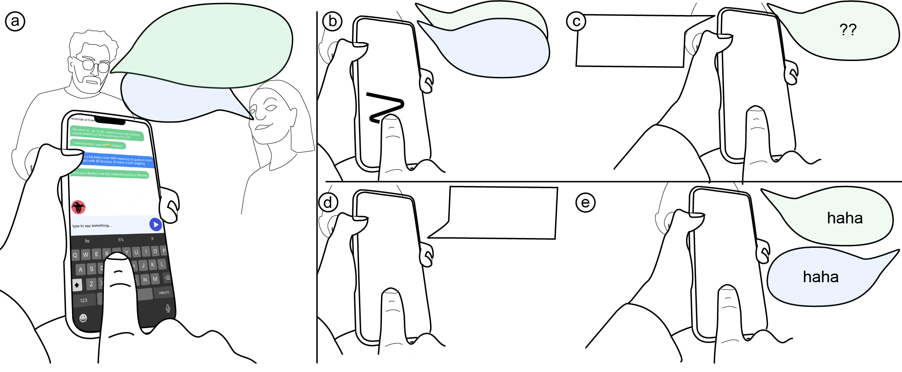

I, Robot? Exploring Ultra-Personalized AI-Powered AAC; an Autoethnographic Account
- Tobias Weinberg Cornell Tech
- Ricardo E. Gonzalez Penuela Cornell Tech
- Stephanie Valencia University of Maryland
- Thijs Roumen Cornell Tech

Fig. 1: We explored the socio-technical implications of ultra-personalization in AAC across three phases.
Abstract
Generic AI auto-complete for message composition often fails to capture the nuance of personal identity, requiring editing. While harmless in low-stakes settings, for users of Augmentative and Alternative Communication (AAC) devices, who rely on such systems to communicate, this burden is severe. Intuitively, the need for edits would be lower if language models were personalized to the specific user's communication. While personalization is technically feasible, it raises questions about how such systems affect AAC users' agency, identity, and privacy. We conducted an autoethnographic study in three phases: (1) seven months of collecting all the lead author's AAC communication data, (2) fine-tuning a model on this dataset, and (3) three months of daily use of personalized AI suggestions. We observed that: logging everyday conversations reshaped the author's sense of agency, model training selectively amplified or muted aspects of his identity, and suggestions occasionally resurfaced private details outside their original context. We find that ultra-personalized AAC reshapes communication by continually renegotiating agency, identity, and privacy between user and model. We highlight design directions for building personalized AAC technology that supports expressive, authentic communication.
Talk with the paper
Acknowledgements
This work was supported in part by a Google Research Scholar Award.
The website template was borrowed from Michaël Gharbi.